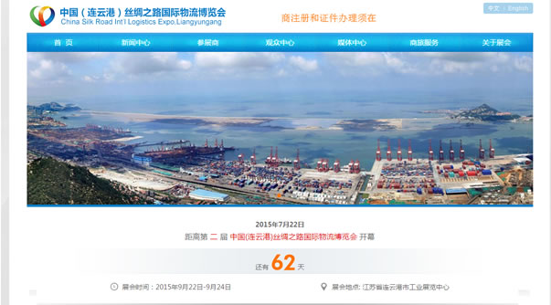

连博会官网
互联网+ 为展览业的发展带来更多科技元素。连博会官网网站集展会信息浏览、展商业务办理、观众观展申请、商旅服务、文档下载、信息统计为一体的专业展会服务平台，并提供功能强大、 完善的管理系统。
互联网+ 为展览业的发展带来更多科技元素。连博会官网网站集展会信息浏览、展商业务办理、观众观展申请、商旅服务、文档下载、信息统计为一体的专业展会服务平台，并提供功能强大、 完善的管理系统。
展商在线申请是面向连博会参展商的在线服务模块。企业可在线填写公司、产品信息，方便地选择参展期间需要租赁的道具以及希望主场运营商提供的现场服务。 该模块包含了参展申报过程中所需的各项业务，方便有关部门快速进行核实、审批，有机地将线上申报与线下服务结合起来。
提供全面的展会现场证件办理业务，通过在线填写申请表格、上传个人照片，即时提交到达证件办理部门；通过在线证件出样，可直观地调整证件样式和个人照片；参展期间也可通过 展会系统快速打印出相关现场 证件，提高参展效率、节约办证时间。

提供了城市基本介绍、酒店、旅游景点、火车票、飞机票、餐饮、旅游服务机构、公交线路等一系列的信息服务，帮助参会人员在参展期间解决相关交通、 餐饮、住宿等问题。
连博会手机客户端是为连博会参会人员提供的移动服务平台，用户可随时方便地了解展会信息、即时办理展会相关业务、查询相关商旅服务； 参展期间可利用APP进行场馆内的导航、定位。